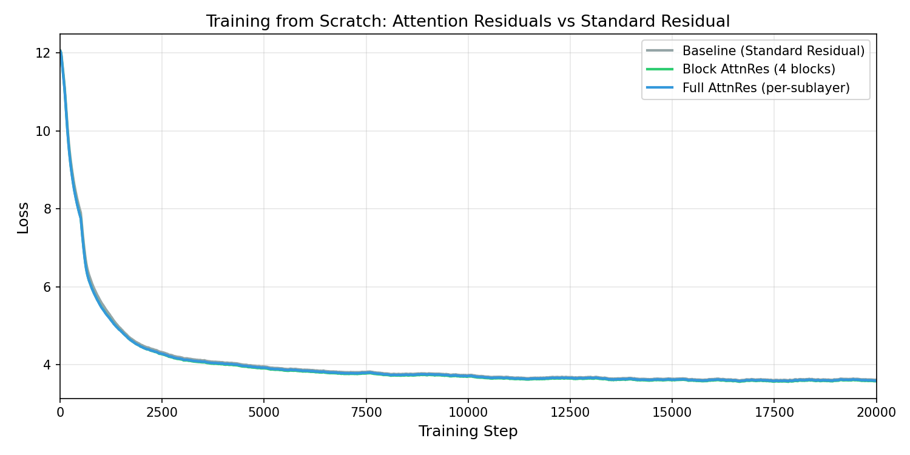
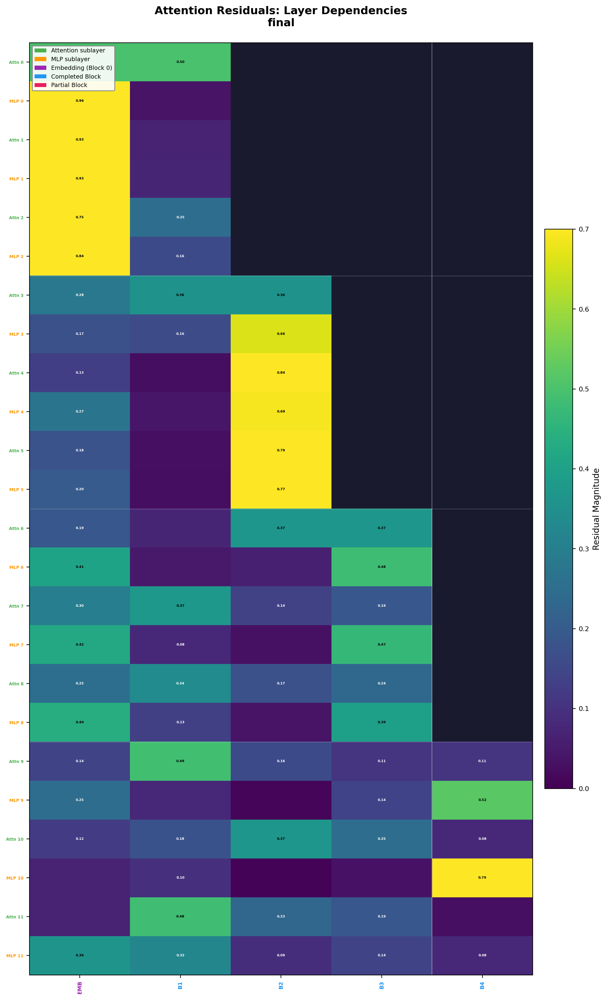
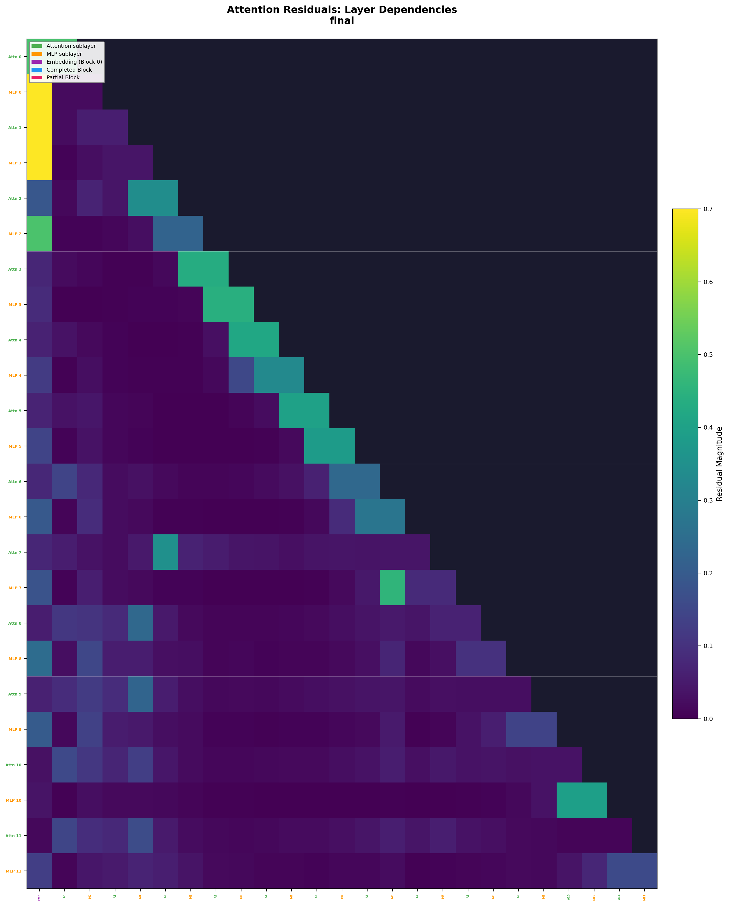
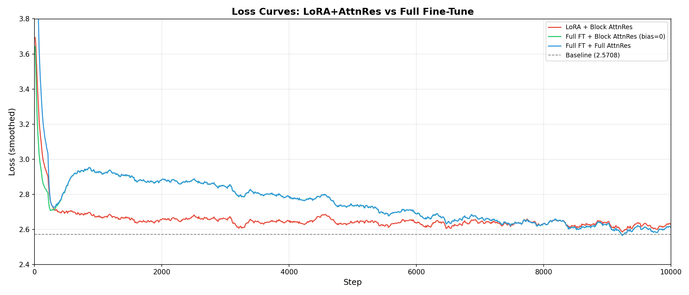

We provide an open-source implementation of Attention Residuals (Kimi Team, 2025) and systematically evaluate them on Qwen3-architecture models. Standard transformers use simple additive residual connections; Attention Residuals replace these with a learned softmax attention over previous layer representations, allowing each layer to selectively retrieve information from any earlier layer.
In a standard transformer, the residual connection at each layer is a simple addition:
h = h + Attention(Norm(h))
h = h + MLP(Norm(h))Every layer can only see the cumulative sum of all previous layers' outputs. A deep layer cannot selectively access the representation from, say, layer 3 without also including the modifications from layers 4 through N-1.
Attention Residuals replace this additive shortcut with a learned depth-wise attention mechanism. Layers are grouped into blocks, and before each sublayer, the model attends over all previous block representations to decide what information to retrieve:
def block_attn_res(blocks, partial_block, proj, norm):
V = torch.stack(blocks + [partial_block]) # (N+1, B, T, D)
K = norm(V) # RMSNorm keys
query = proj.weight.view(-1) # learned query (D,)
logits = einsum("d, n b t d -> n b t", query, K)
weights = softmax(logits, dim=0) # (N+1, B, T)
return einsum("n b t, n b t d -> b t d", weights, V)This allows each layer to selectively attend to specific earlier blocks — similar to how standard attention operates over token positions, but applied across the network's depth.
| Mode | Sources | Description |
|---|---|---|
| Block AttnRes | N blocks (~4-8) | Layers grouped into blocks; attend over block-level summaries |
| Full AttnRes | All sublayer outputs | Every sublayer output is a source; finest-grained routing |
We train a ~100M model (d=512, L=12) from scratch on FineWeb-Edu for 20k steps with identical hyperparameters across three variants: standard residual baseline, Block AttnRes (4 blocks), and Full AttnRes (per-sublayer).

| Model | Train Loss | WikiText-2 PPL | LAMBADA Acc | HellaSwag Acc |
|---|---|---|---|---|
| Baseline | 3.523 | 76.76 | 0.076 | 0.315 |
| Block AttnRes | 3.489 | 70.82 | 0.084 | 0.340 |
| Full AttnRes | 3.502 | 72.70 | 0.102 | 0.305 |
We also ran this experiment at 0.6B scale (d=1024, L=28, same architecture as Qwen3-0.6B):
| Model (0.6B, 20k steps) | Train Loss | Improvement |
|---|---|---|
| Baseline | 3.303 | — |
| Block AttnRes (8 blocks) | 3.245 | -0.058 |
Block AttnRes consistently outperforms Full AttnRes. The reason: with 4 blocks of 3 layers each, each block accumulates multiple layers of computation, creating meaningfully distinctive representations to attend over. Full AttnRes has many individual sublayer outputs that differ by only one small residual update — the signal-to-noise ratio for the softmax routing is worse.
We visualize the learned softmax weights to see how layers route information across depth. Each row is a sublayer (Attn/MLP alternating), each column is a source (earlier block or sublayer output). Brighter = higher attention weight.

Rich cross-block attention patterns: layers selectively attend to specific earlier blocks, not just the most recent one. The embedding (Block 0) receives significant attention from many layers.

Smooth triangular growth (1 source per sublayer). The model learns genuine cross-layer connections but the attention is more diffuse across the many similar sources.
We also applied AttnRes to pretrained Qwen3 models (0.6B and 1.7B) via continued pretraining on FineWeb-Edu for 10k steps. This is a harder setting because the pretrained weights are already optimized for standard residual connections.
| Model | Method | Final Loss | vs Baseline |
|---|---|---|---|
| Qwen3-0.6B | Baseline (continued pretraining) | 2.571 | — |
| Qwen3-0.6B | Block AttnRes (bias=0 frozen) | 2.550 | -0.021 |
| Qwen3-0.6B | Full AttnRes (bias=0 frozen) | 2.549 | -0.022 |
| Qwen3-1.7B | Baseline | 2.343 | — |
| Qwen3-1.7B | Block AttnRes (bias=3 learnable) | 2.340 | -0.003 |

| Approach | Result |
|---|---|
| Learnable recency bias (init=3, 5, 10) | Model increases bias during training, escaping back to standard residual |
| Sigmoid scalar gate (init=-10) | Gate stuck at 0 due to sigmoid saturation |
| Frozen base + AttnRes only | Loss 2.75 — AttnRes alone can't compensate for disrupted inputs |
| LoRA + AttnRes | Loss 2.57 — LoRA too constrained for deep co-adaptation |
| Knowledge Distillation | KL loss exploded due to uniform-attention initial disruption |
| Zero-init queries (paper default) | Best result: -0.022 loss improvement |
The conclusion: for fine-tuning, just use the paper's zero-init. For the best results, train from scratch.
# Install
pip install -r requirements.txt
# Train from scratch (Block AttnRes, recommended)
torchrun --nproc_per_node=8 train.py --mode block --num_blocks 4
# Evaluate
python eval.py --model_path output/scratch-block-d512-L12-20k/final --mode block
# Interactive visualization
python app.py --model_path output/scratch-block-d512-L12-20k/final --mode block| Model | Mode | HuggingFace |
|---|---|---|
| 100M Baseline | — | wdlctc/open-attnres-baseline |
| 100M Block AttnRes | 4 blocks | wdlctc/open-attnres-block |
| 100M Full AttnRes | per-sublayer | wdlctc/open-attnres-full |
@software{luo2025openattnres,
title={Open Attention Residuals},
author={Cheng Luo and Zefan Cai},
url={https://github.com/wdlctc/open-attention-residuals},
year={2025}
}
@article{kimi2025attention,
title={Attention Residuals},
author={Kimi Team},
journal={arXiv preprint arXiv:2603.15031},
year={2025}
}